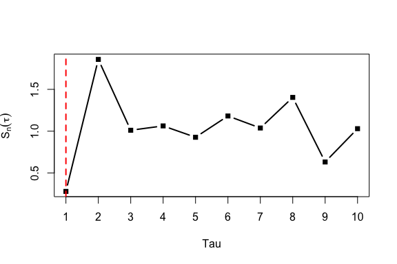

Overview
VMAorder provides tools for simulation, statistic construction, order estimation, stationarity checking, and visualization for vector moving-average (VMA) models.
The package focuses on multivariate time series of the form
where is a white-noise innovation vector and (A_h) is the coefficient matrix at lag . It is mainly designed for exploratory and methodological experiments with high-dimensional VMA-type processes.
A typical workflow is:
- generate VMA coefficient matrices;
- simulate multivariate VMA observations;
- compute lagged cross-covariance matrices;
- construct VMA order statistics;
- estimate the VMA order;
- check stationarity and visualize statistic curves.
Installation
You can install the development version of VMAorder from GitHub with:
# install.packages("pak")
pak::pak("qin01546-ops/VMAorder")After installation, load the package with:
Main Functions
| Function | Purpose |
|---|---|
simVMAcoef() |
Generate sparse coefficient matrices for a VMA model. |
simVMA() |
Simulate observations from a VMA model. |
covVMA() |
Estimate lagged cross-covariance matrices. |
statVMA() |
Compute VMA order statistics over candidate lags. |
orderVMA() |
Estimate the VMA order using a stable-interval rule. |
stationVMA() |
Test stationarity for each variable in a multivariate series. |
plotVMA() |
Visualize mean statistic curves from repeated simulations. |
Quick Example
The following example simulates a VMA(2) process with 5 variables and 100 observations.
fit <- simVMA(n = 100, p = 5, order = 2, seed = 123)
dim(fit$x)
#> [1] 100 5
head(fit$x)
#> X1 X2 X3 X4 X5
#> [1,] -0.1089660 0.4520302 -0.4628790 1.102593437 -1.4413167
#> [2,] -0.1172420 0.5268557 -1.9111513 -0.784310368 -1.6156411
#> [3,] 0.1830826 -0.2302622 0.3698160 -0.596863723 0.6076538
#> [4,] 1.2805549 1.3974267 -0.4622881 0.005525749 0.7484698
#> [5,] -1.7272706 1.7636530 0.3219559 -0.311691381 0.5811898
#> [6,] 1.6901844 0.4856014 -0.2840014 0.764676679 0.1845464The simulated data are stored in fit$x, and the coefficient matrices are stored in fit$coef or fit$coeff.
dim(fit$coef)
#> [1] 5 5 2
fit$coef[, , 1]
#> X1 X2 X3 X4 X5
#> X1 0 0 0.000000000 0 0
#> X2 0 0 0.000000000 0 0
#> X3 0 0 0.000000000 0 0
#> X4 0 0 0.000000000 0 0
#> X5 0 0 0.008976922 0 0Lagged Cross-Covariance Matrix
The function covVMA() estimates the lagged cross-covariance matrix at a given lag.
VMA Statistic
The function statVMA() computes the statistic values over a set of candidate lags.
stat_result <- statVMA(fit$x, lag = 1:5)
stat_result
#> lag Sn
#> 1 1 0.2802450
#> 2 2 1.8580184
#> 3 3 1.0111102
#> 4 4 1.0631176
#> 5 5 0.9273607These statistics are used by orderVMA() to estimate the model order.
Order Estimation
The function orderVMA() estimates the VMA order using a stable-interval rule. The selected order is taken as one lag before the statistic enters a stable interval.
order_result <- orderVMA(fit$x, lag = 1:10, draw = FALSE)
order_result$order
#> [1] 1
order_result$table
#> lag Sn inside_interval lower upper width tail_mean tail_sd
#> 1 1 0.2802450 TRUE -0.1581 2.1581 1.1581 1.0219 0.386
#> 2 2 1.8580184 TRUE -0.1581 2.1581 1.1581 1.0219 0.386
#> 3 3 1.0111102 TRUE -0.1581 2.1581 1.1581 1.0219 0.386
#> 4 4 1.0631176 TRUE -0.1581 2.1581 1.1581 1.0219 0.386
#> 5 5 0.9273607 TRUE -0.1581 2.1581 1.1581 1.0219 0.386
#> 6 6 1.1817878 TRUE -0.1581 2.1581 1.1581 1.0219 0.386
#> 7 7 1.0379800 TRUE -0.1581 2.1581 1.1581 1.0219 0.386
#> 8 8 1.4038172 TRUE -0.1581 2.1581 1.1581 1.0219 0.386
#> 9 9 0.6319112 TRUE -0.1581 2.1581 1.1581 1.0219 0.386
#> 10 10 1.0300187 TRUE -0.1581 2.1581 1.1581 1.0219 0.386
#> stable_start q_hat_interval
#> 1 2 1
#> 2 2 1
#> 3 2 1
#> 4 2 1
#> 5 2 1
#> 6 2 1
#> 7 2 1
#> 8 2 1
#> 9 2 1
#> 10 2 1If draw = TRUE, the statistic curve is plotted and the estimated order is marked by a vertical dashed line.
orderVMA(fit$x, lag = 1:10, draw = TRUE)
#> $order
#> [1] 1
#>
#> $interval
#> $interval$q_hat
#> [1] 1
#>
#> $interval$stable_start
#> [1] 2
#>
#> $interval$lower
#> [1] -0.1580503
#>
#> $interval$upper
#> [1] 2.15805
#>
#> $interval$tail_mean
#> [1] 1.021916
#>
#> $interval$tail_sd
#> [1] 0.3860168
#>
#> $interval$width
#> [1] 1.15805
#>
#> $interval$inside
#> [1] TRUE TRUE TRUE TRUE TRUE TRUE TRUE TRUE TRUE TRUE
#>
#>
#> $table
#> lag Sn inside_interval lower upper width tail_mean tail_sd
#> 1 1 0.2802450 TRUE -0.1581 2.1581 1.1581 1.0219 0.386
#> 2 2 1.8580184 TRUE -0.1581 2.1581 1.1581 1.0219 0.386
#> 3 3 1.0111102 TRUE -0.1581 2.1581 1.1581 1.0219 0.386
#> 4 4 1.0631176 TRUE -0.1581 2.1581 1.1581 1.0219 0.386
#> 5 5 0.9273607 TRUE -0.1581 2.1581 1.1581 1.0219 0.386
#> 6 6 1.1817878 TRUE -0.1581 2.1581 1.1581 1.0219 0.386
#> 7 7 1.0379800 TRUE -0.1581 2.1581 1.1581 1.0219 0.386
#> 8 8 1.4038172 TRUE -0.1581 2.1581 1.1581 1.0219 0.386
#> 9 9 0.6319112 TRUE -0.1581 2.1581 1.1581 1.0219 0.386
#> 10 10 1.0300187 TRUE -0.1581 2.1581 1.1581 1.0219 0.386
#> stable_start q_hat_interval
#> 1 2 1
#> 2 2 1
#> 3 2 1
#> 4 2 1
#> 5 2 1
#> 6 2 1
#> 7 2 1
#> 8 2 1
#> 9 2 1
#> 10 2 1Stationarity Test
The function stationVMA() applies the Augmented Dickey-Fuller test to each variable in the multivariate time series.
station_result <- stationVMA(fit$x)
#> Registered S3 method overwritten by 'quantmod':
#> method from
#> as.zoo.data.frame zoo
#> Warning in tseries::adf.test(x[, j]): p-value smaller than printed p-value
#> Warning in tseries::adf.test(x[, j]): p-value smaller than printed p-value
#> Warning in tseries::adf.test(x[, j]): p-value smaller than printed p-value
#> sample size: 100
#> dimension: 5
#> non-stationary: 0
station_result$non_stationary
#> [1] 0
station_result$table
#> variable p_value result
#> 1 X1 0.01208235 stationary
#> 2 X2 0.01000000 stationary
#> 3 X3 0.01000000 stationary
#> 4 X4 0.01000000 stationary
#> 5 X5 0.03447247 stationaryVisualization
The function plotVMA() can be used to compare mean statistic curves across different VMA orders and simulation settings.
settings <- data.frame(
p = c(5, 8),
n = c(80, 100)
)
out <- plotVMA(
order = c(2, 3),
settings = settings,
R = 5,
lag = 1:6
)
out$plotThis example is not evaluated in the README because repeated simulations may take longer to run.